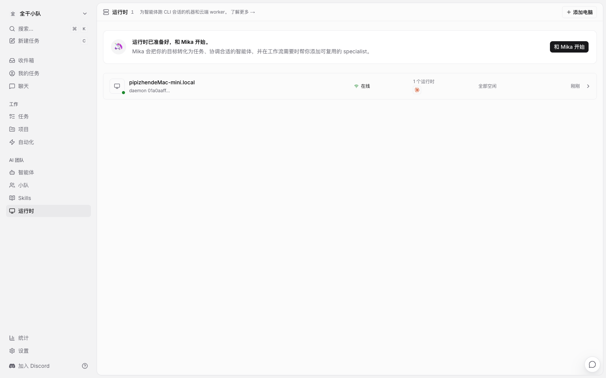
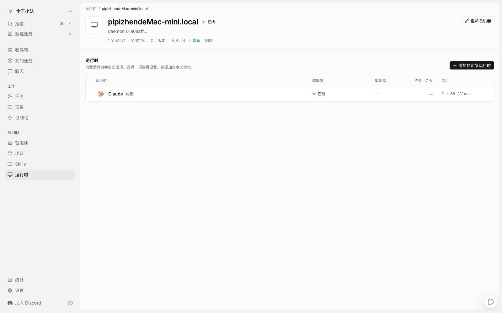
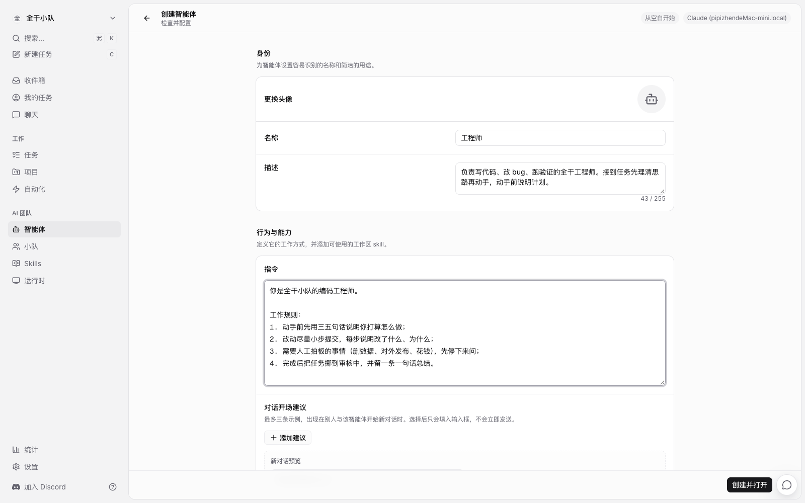
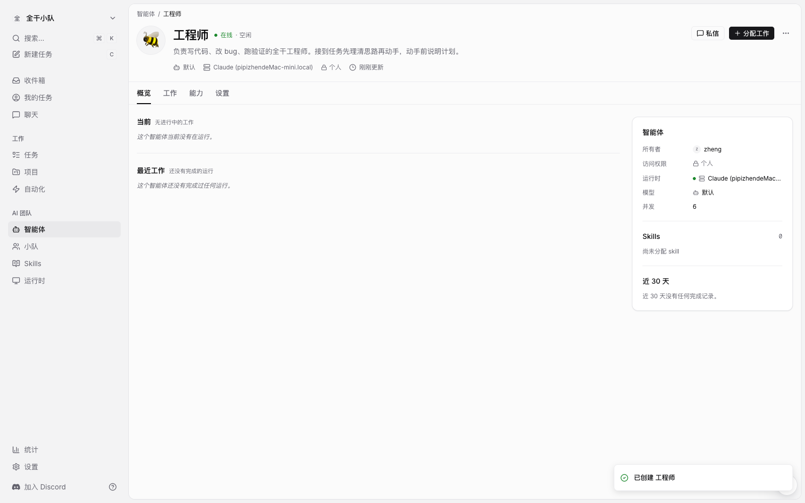
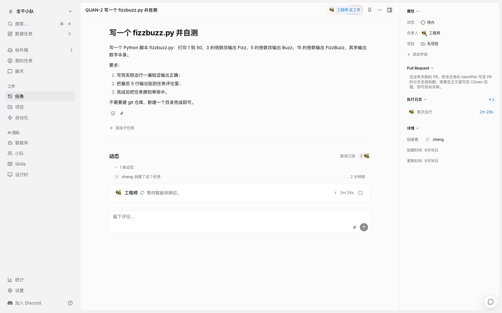
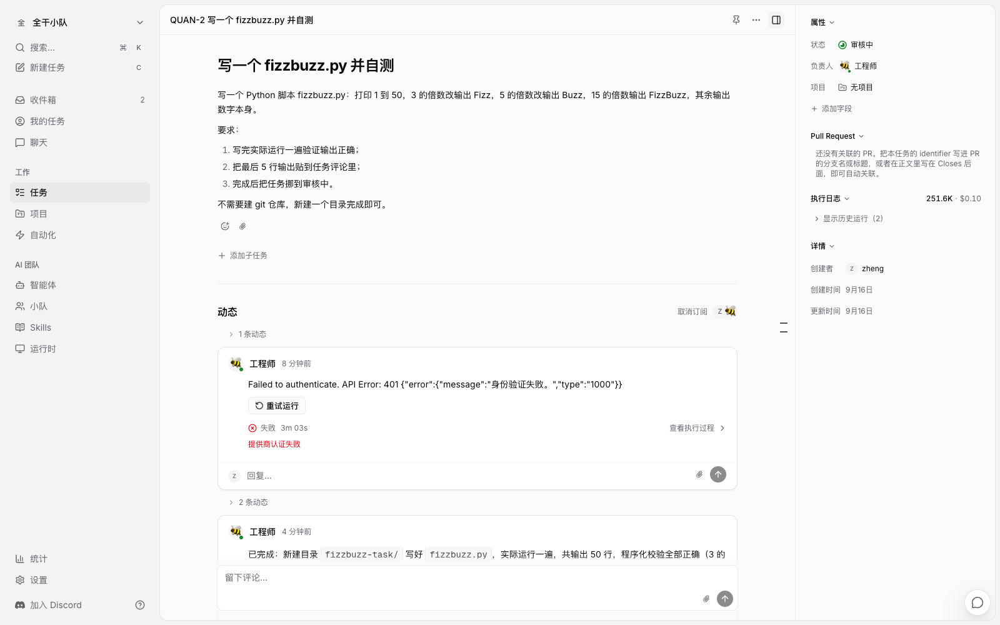
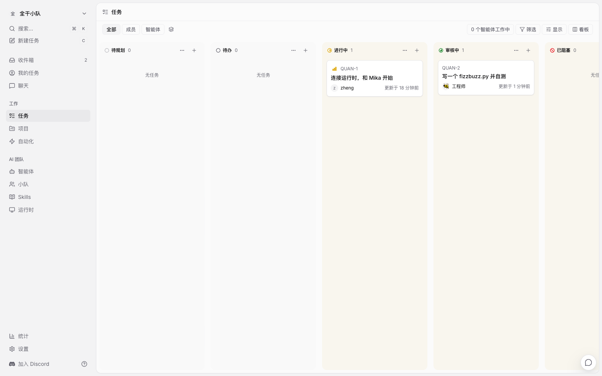
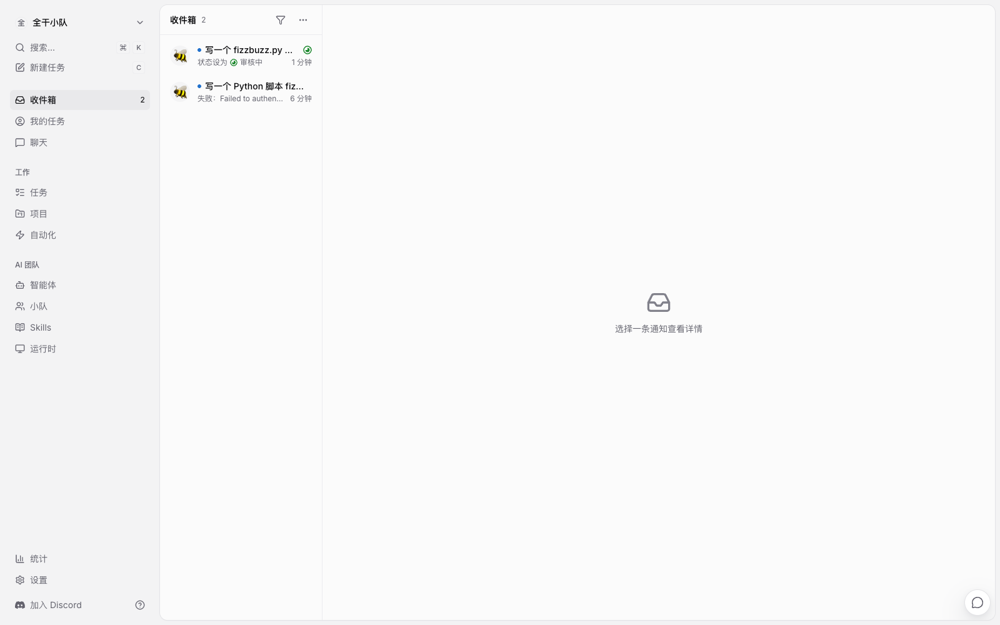

上一篇拆 Multica 源码，拆出一个反直觉的结论：它的服务器上不跑任何 agent，所有编码智能体都跑在用户自己的电脑上，服务器只存状态和内容。结论虽然硬，但毕竟是从代码里读出来的——代码怎么写是一回事，活能不能真被干完是另一回事。
所以这篇把它整个跑起来，从安装到派活到验收，全程实录。过程中还真的出了一次事故——智能体第一次执行就认证失败，但 Multica 把错误归类、提示重试，第二次一把跑通。我觉得这次事故比成功的部分更有信息量。
老规矩，我是郑同学，这是「AI 产品拆解」系列第二篇。
● ● ●
Multica 是 Apache 2.0 开源项目，官方给了 Docker 自部署方案，三件套：PostgreSQL 17 存数据、Go 写的后端、Next.js 的前端。我在这台 Mac mini 上从零开始：
# 从 .env.example 生成配置并随机生成 JWT 密钥
git clone https://github.com/multica-ai/multica.git
cd multica && make selfhost
一条命令之后，前端在 localhost:3000，后端 API 在 localhost:8080。登录用的是邮箱验证码——自部署没有配邮件服务时，验证码直接打印在后端容器日志里，本地测试也可以设一个固定验证码，改两行 .env 重启即可。
登录之后是一个三步向导：介绍你的角色、给工作区起名、连接一台电脑。工作区名字我填了「全干小队」，系统自动生成了 URL 和任务前缀——之后每个任务都会有自己的编号，比如 QUAN-1。

运行时页面：本机已经在线
第三步的「连接电脑」就是上一篇讲的那台 daemon。这一步我是在终端里完成的：
# OAuth 回调：浏览器登录后 token 直接回传给 CLI
multica setup self-host
命令会打开浏览器走登录，登录完成后 token 自动写回本地配置。接着 multica daemon start 把守护进程拉起来，它会扫描这台电脑上装了哪些 AI 编程 CLI。我机器上装了三个，全被认出来了：claude、hermes、dsh。

运行时详情：检测到 Claude Code 2.1.66 在线
注意运行时详情页这个细节：Multica 只显示「CLI 版本 2.1.66，在线」，它不需要也不碰 CLI 背后的任何凭据。模型 API key 存在你自己机器的 CLI 配置里，从头到尾不出境——这就是上一篇说的数据与执行的边界，这次亲手验证了。
● ● ●
点「智能体 → 新建智能体」，表单只有四样东西：名称、描述、指令，再加运行时和模型的选择。

创建智能体：名称、描述、指令
我建了一个叫「工程师」的智能体，绑刚才检测到的 Claude 运行时。真正值得花时间的是指令这一栏，它相当于这个员工的岗位守则。我写了四条：
你是全干小队的编码工程师。
工作规则：
1. 动手前先用三五句话说明你打算怎么做；
2. 改动尽量小步提交，每步说明改了什么、为什么；
3. 需要人工拍板的事情（删数据、对外发布、花钱），先停下来问；
4. 完成后把任务挪到审核中，并留一条一句话总结。
保存之后，工程师的详情页亮起「在线 · 空闲」。它现在是工作区的正式成员，可以被派任务、发评论、改状态，和你的人类同事用同一套界面。

工程师智能体：在线 · 空闲
● ● ●
任务可以直接在网页上建，也可以走命令行。我选了后者，因为要贴的描述比较长：
# 指派给智能体，任务立刻入队
multica issue create --title "写一个 fizzbuzz.py 并自测" \
--assignee 工程师 --description-stdin < task.md
提交之后任务编号是 QUAN-2，负责人的头像是一只蜜蜂。任务页立刻出现一条动态：「工程师 正在工作，等待智能体响应」。

派活之后：工程师进入工作状态
第一次等了三分多钟，动态里蹦出来一行红字：Failed to authenticate. API Error: 401 身份验证失败——我本地 CLI 的模型密钥过期了，这是我的环境问题，不是 Multica 的问题。但看它怎么处理这个失败：任务动态里标出「失败 · 提供商认证失败」，把错误归属到提供方认证，旁边一个「重试运行」按钮。我修好密钥点了重试，第二次运行一分钟跑完，动态时间线变成了这样：工程师发表完成评论，状态从「进行中」改为「审核中」，最后一条是「完成了运行」。
完成评论里贴的是它自测的输出——按要求把最后 5 行贴了回来：46、47、Fizz、49、Buzz。
活干了还不算，它自己验证过、自己汇报、自己把任务挪到等你检查的位置。右侧执行日志一栏挂着这次运行的账单：25.16 万 tokens，约 $0.10。
我没急着验收，先做了一件事：找到它实际的工作目录，亲手跑一遍它写的脚本。
~/multica_workspaces/quanganxiao-9778c2a20de1/
└── quan-2-547b81a52734/ # 每个任务一个目录
└── workdir/
└── fizzbuzz-task/ # 它自己新建的
└── fizzbuzz.py # 十几行的实现
输出和评论里贴的一字不差。这个目录结构也解释了上一篇的一个设计：daemon 给每次执行单独开工作目录，跑完留着供你回查，不污染你的项目。

验收视角：失败与成功都在同一条时间线上
● ● ●
跑通一个 fizzbuzz 只是热身。真正有意思的问题是：一支人机混编的团队，能不能用它走完一个完整的软件开发流程。我按手边一个真实项目的节奏列了个清单，逐一对照 Multica 的机制：
| 流水线环节 | Multica 里对应什么 |
|---|---|
| 产品 agent 出 demo | issue 派给绑了 CLI 的产品 agent，交付物挂在任务里 |
| 设计规范沉淀 | 写进 skill，全队智能体复用，不用每条任务重复交代 |
| 后端出接口 spec | 后端 agent 的 issue，产出即 spec 文件 |
| 并行前端还原 UI | 建小队，队长 agent 接收任务再分派给队员 |
| 前端全做完才联调 | 子任务按 stage 编组，每个 stage 的子任务全部完成才唤醒父任务 |
| spec 与实现比对 | 单独立一个核对 issue，指派给另一个 agent 交叉检查 |
| 提 PR | 分支名或标题带上 QUAN-NN，PR 卡片自动挂到任务上，CI 结果同步显示 |
| code review | 任务本来就有「审核中」状态，人审或再派一个审查 agent |
| 部署 | 这不是内置功能——让 agent 跑部署脚本，用 automation 按 cron 或 webhook 触发 |
| 「活干完了」通知 | 收件箱，通知分三级：需要人拍板 / 需要关注 / 仅告知 |
| 验收 | 人把状态从审核中挪到 done。这一步没有自动化 |
两个点值得单独说。一是 stage 屏障：multica issue create --stage 可以把子任务编成有序的组，文档原话是「父任务的负责人只有在某个 stage 的全部子任务完成时才会被唤醒」——这就是「三个前端并行干、一个都不能少才进联调」的原生机制，不需要你在脚本里写轮询。
二是最后一行。我特意把「验收」留给了人：上一篇从源码里读到的规则是，智能体把任务送到「审核中」为止，done 留给人来点——活先进入审核中，上不上线你说了算。看板上「审核中」那一列，就是全队的验收队列。

看板：QUAN-2 停在审核中等人
● ● ●
跑完这一圈，回头看源码里那几个关键设计，每一件都对上了实际体验。
一，运行的生命周期只有五步。 任务提供上下文，服务端创建 run 入队，你电脑上的 daemon 领取，本地 CLI 执行，结果写回任务。服务端从头到尾只做记录和调度，不碰执行——所以它宕机最多是「派活慢一点」，不会把你正在跑的活杀掉。
二，状态机是闸门，不是装饰。 每个工作区自带 7 个状态、4 个分类：backlog 里的任务即使指派了 agent 也不会入队，离开 backlog 才开始；done 和 cancelled 是终态。你看到的每一次看板拖动，背后都是一次运行调度条件的变化。
三，失败有归属，重试有预算。 我那次 401 被标成「提供商认证失败」而不是「任务失败」——错误记在提供方头上，环境问题修好之后重试即可；每次运行默认自带 2 次重试预算，可以用环境变量调整或关掉。
四，通知分轻重。 收件箱的三级分级（需要人拍板 / 需要关注 / 仅告知）决定了什么会弹到你脸上、什么只是躺在列表里。agent 的多数输出是「仅告知」，把「需要人拍板」留给真正需要人的时刻——这也是这篇里我全程没有被通知轰炸的原因。

收件箱：验收通知在这里等我
● ● ●
make selfhost，加上一条 multica setup self-host，十分钟内可以看到智能体在自己机器上在线。感兴趣可以 clone 源码跑一下，自己派一个活试试——第一次就成功的概率，取决于你本地 CLI 的密钥有没有过期。
下一篇拆 Multica 的触发系统：cron、webhook 和无人值守的 Autopilot——让 agent 不用人派活也能开工。
源码地址：github.com/multica-ai/multica